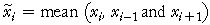

Smoothing
Random fluctuations in a time series are usually noise that can obscure trend and other signal in the series. The values can be smoothed to reduce these random fluctuations and show the systematic movement in the series more clearly.
smoothed value = centre ( original value and adjacent values )
Moving averages
A 3-point moving average replaces the value at time i by

Moving averages are also called running means. In the example below, a 7-point moving average replaces each value with the mean of it and the 3 adjacent values on each side.
The more adjacent values used, the greater the smoothing.
Ends of the series
Note that moving averages cannot be used to smooth the values at the two ends of the time series.